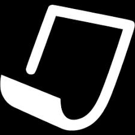

Hi! My name is Klara Kohler
... and I am a second year master student in Integrated Product Design at TU Delft, coming from Germany and living in The Netherlands for 5 years. I am an active person, who loves nature, which is reflected in my passion for outdoor activities, gardening, and sustainable design. I like cultures and languages and enjoy working in a diverse team and travel and explore new places. As designer I want to create meaningful products which emphasize the interaction between people and nature. By engaging people to experience nature I want to establish awareness for our environment in a positive way. Considering the user and the context, I like to solve a problem and design for sustainability, from the materialisation and production throughout the complete life cycle of a product. I enjoy the translation of an idea into a physical product, creating tangible prototypes and making it real. Good design means for me integration and simplification, making good use of technology and resources.
I feel confident building things, and have experience with metal working, rapid prototyping and DIY. I think very practical and like to make concepts tangible. I am good at doing research, and can well present with a good argumentation and a coherent story. I have a critical mindset and I work goal oriented, which also makes me good with planning. I know the design process well and am good in team work, also with an multi¬disciplinary and international team. I speak fluently German, English, Dutch, and basic French and Spanish. I am flexible, open-minded and my curiosity makes me motivated and enthusiastic for a project
⇨ Download my CV

Contact
If you would like to get more information about me or one of my projects, please don’t hesitate to send me an email or connect with me on Linkedin